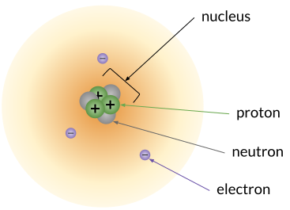

Introduction
Safety First
Safety Contract
What is Chemistry?
the central science
What do chemists study?
Atoms, isotopes, and ion
Atoms are made of three subatomic
particles: protons and neutrons in the nucleus and electron “orbiting”
the nucleus.

Atomic models and
periodicity
Chemical bonding
Chemical reactions
Stoichiometry and the mole
States of matter
Thermochemistry
Solutions, acids, and bases
Reaction rates and
equilibrium
Nuclear chemistry